NVIDIA Groq 3 LPX是Vera Rubin平台的交互式AI推理加速器。本文报告第三方基准Artificial Analysis在Gemma 4 31B上的100K context测试结果：3431 token/秒的世界级交互速度，且精度/质量无损失。
背后是编译器确定性调度 + 细粒度计算通信重叠 + 预规划chip-to-chip网络，让小batch（高交互必需）下也能做有效张量并行。与Vera Rubin NVL72配合，还能支撑prefill-decode分离、attention-FFN分离、外部draft推测解码等多种共执行配置，扩展到万亿参数模型。
Agentic会话的特征是多轮推理。每轮结束，agent的输出被追加到持续增长、并喂进后续所有轮的上下文里。
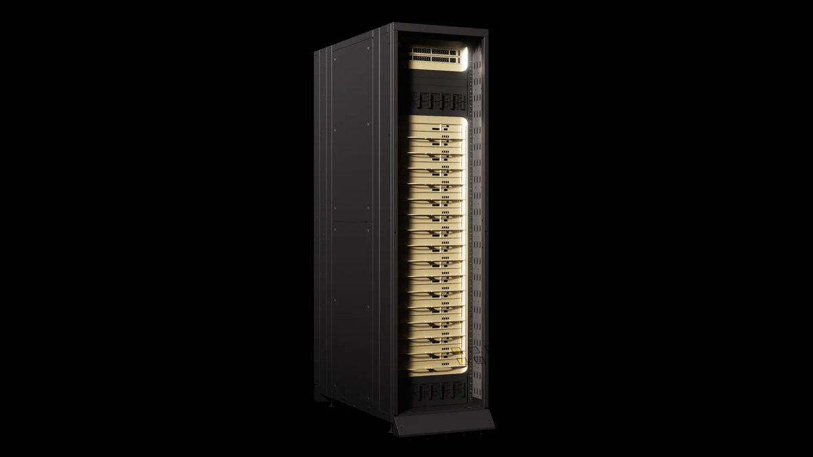
如图1，尤其当会话超过几百轮，上下文可涨到几十万token。这意味着任务后期agent必须反复处理到目前为止学到的一切。没有长上下文，agent只能考虑先前相关上下文的一小部分。无论模型多快多聪明，有限上下文 = 有限agentic能力。最强agent不仅要快，还得在会话增长时保住长上下文。
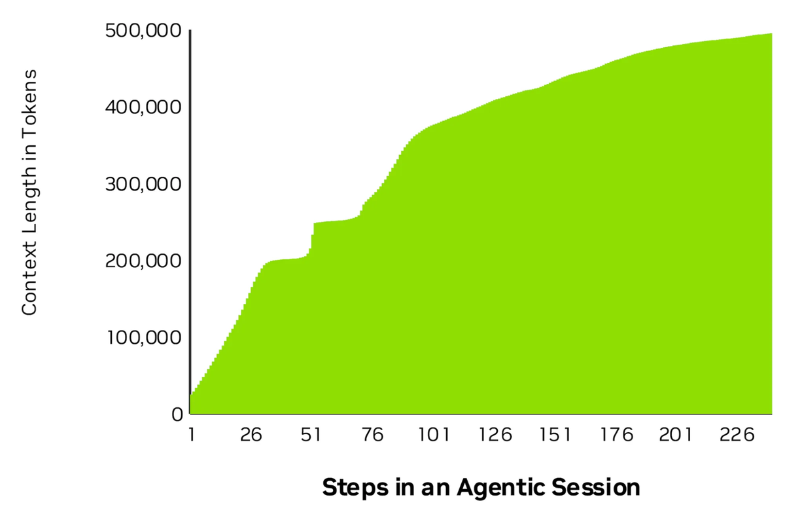
给单个用户在管理100K输入token KV cache的同时以 >3000 token/s服务，是独特的系统挑战。推理里分治技术如张量并行（TP）能带来数量级加速：如果系统能高效管理所需的协调（集合操作）。但最高交互等级要求非常小的batch，此时固定协调成本可能盖过TP节省的时间。
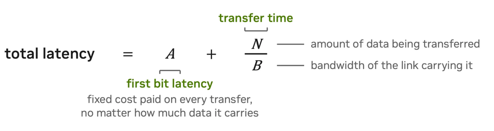
TP两部分：并行跨多芯片算，再合并结果。高交互推理要求的小batch下，让TP有效需要紧协调：很多小张量必须在计算单元间转移，每张精确在需要的时间地点到达。通信和合并结果的时间很容易等于甚至大于分布计算节省的时间。
每次单独转移总时间两个分量：first bit latency（判定该用哪条链路、同步收发端、仲裁冲突的费用）+转移时间（数据量除以带宽）。TP的数量级加速要求把first bit latency压到绝对最低。在整个前向传播做到这点：对权重和长上下文KV cache都并行：需要同时为低延迟和长上下文设计的方案。
Groq 3 LPX用编译器调度的负载规划服务超高交互长上下文，包括机架内chip-to-chip（C2C）网络和把计算与处理器间通信大幅重叠。
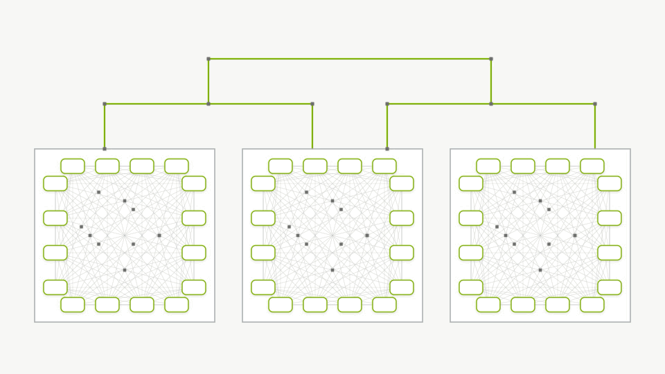
紧调度的芯片间通信：LPX用确定性执行模型。编译器能看见每颗LP30（256个LPU之一）里的独立计算单元、这些芯片合计的128GB SRAM、每芯片96条112Gbps C2C链路。能据此在负载开始前产出精确到时钟周期的调度方案，消除转移的实时仲裁：预先规划每块数据何时走每条C2C链路。
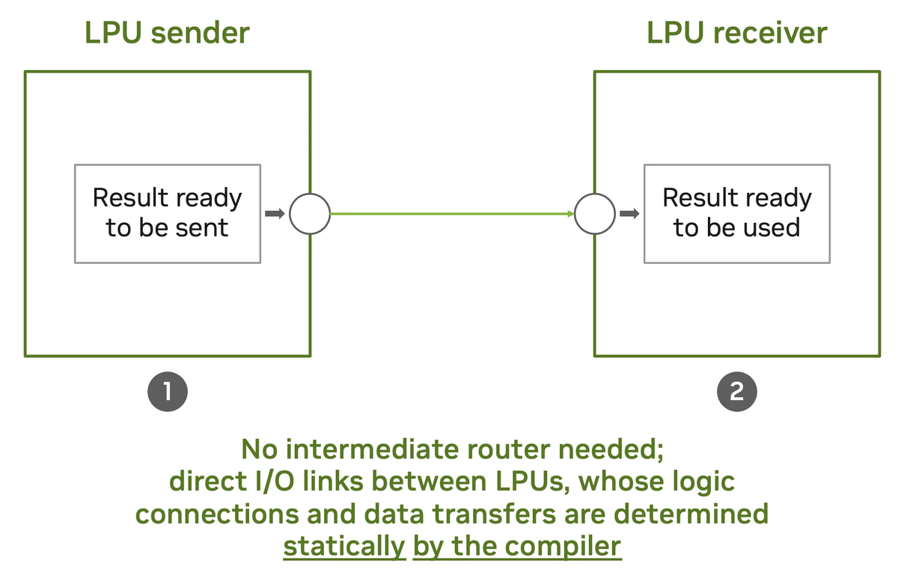
预负载调度还带来转移方式的根本转变。很多系统每次转移多步（一方请求、另一方确认并定位、可能竞争资源）；编译器调度让LPU在数据就绪的时钟周期发出、到达的时钟周期消费，数据直接从发送者结果走I/O链路到接收者，无中间路由（连接静态由编译器决定）。链路是LPU两两之间的点对点，每颗LPU既是处理器也能当路由器。
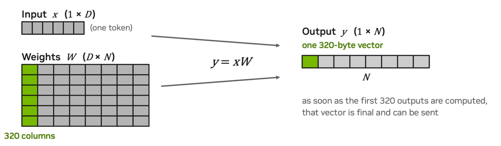
这套网络把first bit latency压到绝对最低。大batch时first bit被线上实际秒字节的时间掩盖；但对高交互帕累托区，把固定转移初始化时间最小化变得关键。
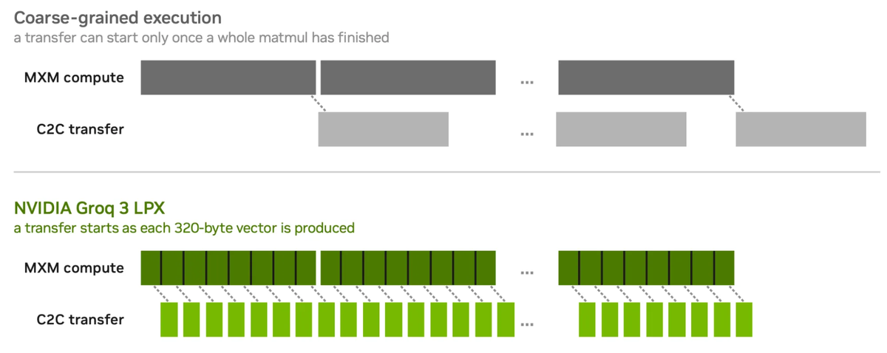
细粒度计算-通信重叠：编译器还能把众多小C2C转移与计算在极细粒度重叠：在320-byte向量粒度调度计算和通信单元。利用矩阵乘法可表达为一系列点积，编译器能让单颗LPU算输出矩阵的320列、算完立即经C2C发走，不必等整个矩阵操作完成。这提升计算-通信重叠，尤其对小张量：细粒度C2C调度让计算以最小通信尾部完成。
合起来，这些技术带来长上下文推理最算力密集的注意力操作的数量级加速。靠紧协调的芯片间计算通信调度，LPX能在小batch、高交互的帕累托区利用张量并行的分治优势。
Artificial Analysis有标准基准套件测不同推理提供者在其模型上的服务速度（10K和100K输入上下文）。用此套件测了2026年4月发布的31B稠密模型Gemma 4的100K基准。NVIDIA在自己数据中心搭的Groq 3 LPX系统以3431输出token/s作答：而Artificial Analysis最快的公开端点约870 token/s。
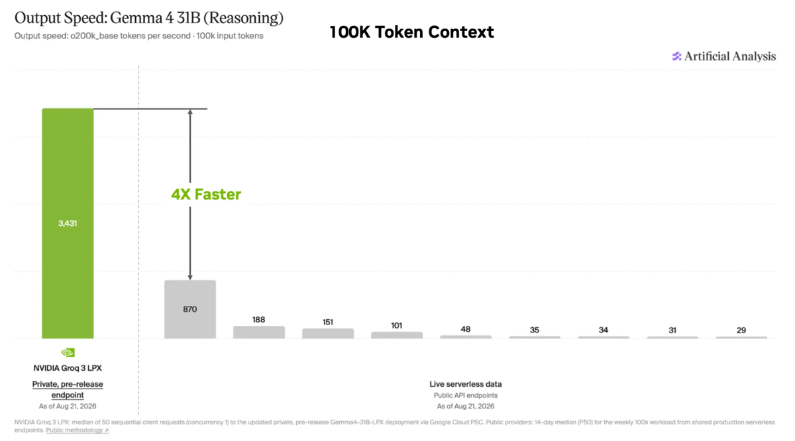
10K context测同样系统：3382 token/s（最快公开端点1402）。LPU确定性架构 + 高张量并行让延迟和输出token/s相对上下文长度变化极小。两基准NVIDIA配置均无精度或模型质量损失。
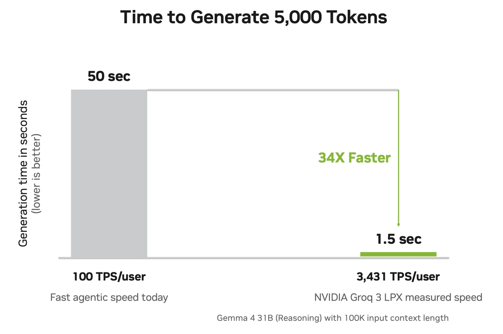
作为编码特定补充测量，跑开源SPEED-Bench（原始生成速度在agentic编码工作流里尤其重要）。同Gemma 4：中位4767输出token/s、P805520：20% 任务超5500 token/s。
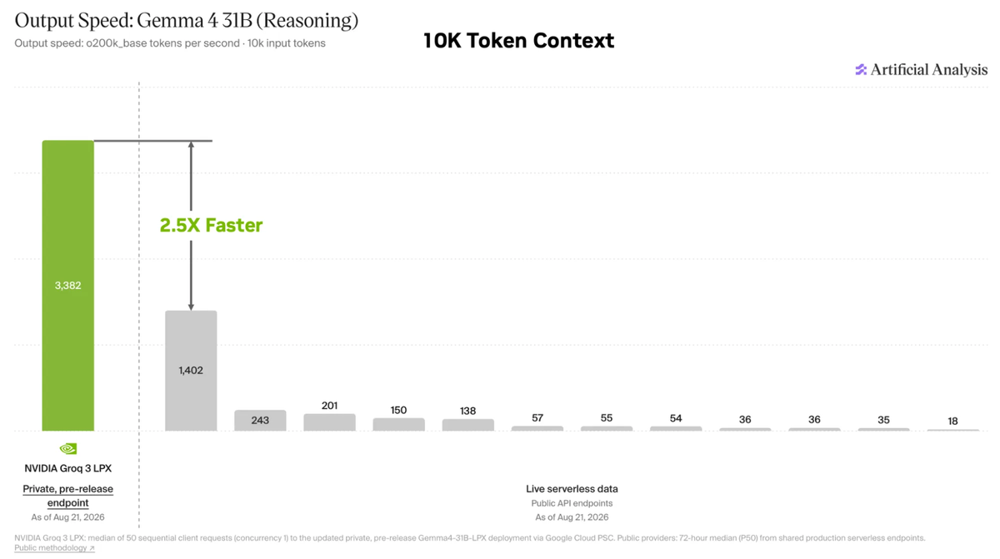
对agentic编码任务（agent可能读几百文件轻松超100K context、再据此生成5000个推理+输出token），这不只受益于上下文、也是根本改变体验的速度。解码5000 token约1.5秒，vs 100 token/s要50秒（34×）：而当今最流行agentic工具实际更接近60 token/s。
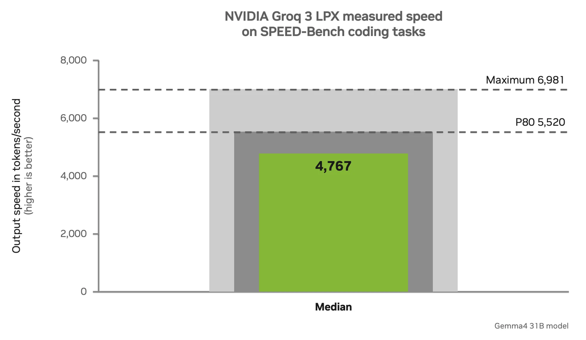
把LPX的低延迟确定性执行与Vera Rubin NVL72机柜配对，支持多种服务配置：
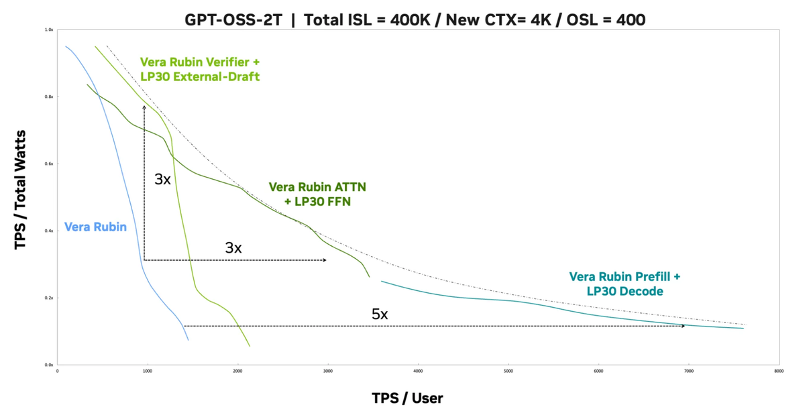
标准prefill-decode分离：Vera Rubin NVL72处理prefill、每轮把KV cache交给LPX；LPX用它 + 存在SRAM的权重，执行整个decode步。
attention-FFN分离：Vera Rubin算attention并把KV cache存DRAM，LPX执行FFN层：只有中间token每整个attention层一次跨机柜发送。
外部draft推测解码：LPX在Vera Rubin上的大目标模型前跑小draft模型，后者验证并提交token、把被拒位置返回给下一chunk。每机柜保各模型自己的KV cache，只有draft token跨链路。
这些都让每机柜聚焦它最擅长的负载部分。全协同设计下，LPX把Vera Rubin平台推向新高交互低延迟。图11是把GPT-OSS缩放到2万亿参数、跑在Vera Rubin NVL72 + Groq 3 LPX的投影。
Groq 3 LPX的速度已被第三方基准测到，确证它在对agentic工作流重要的上下文长度上给出领先交互；NVIDIA还在开源编码基准上测到更极端的性能。
了解更多：Inside NVIDIA Groq 3 LPX: The Low-Latency Inference Accelerator for the NVIDIA Vera Rubin Platform。
参考：https://developer.nvidia.com/blog/how-nvidia-groq-3-lpx-unlocks-ultrafast-interactivity-at-long-context-on-nvidia-vera-rubin/